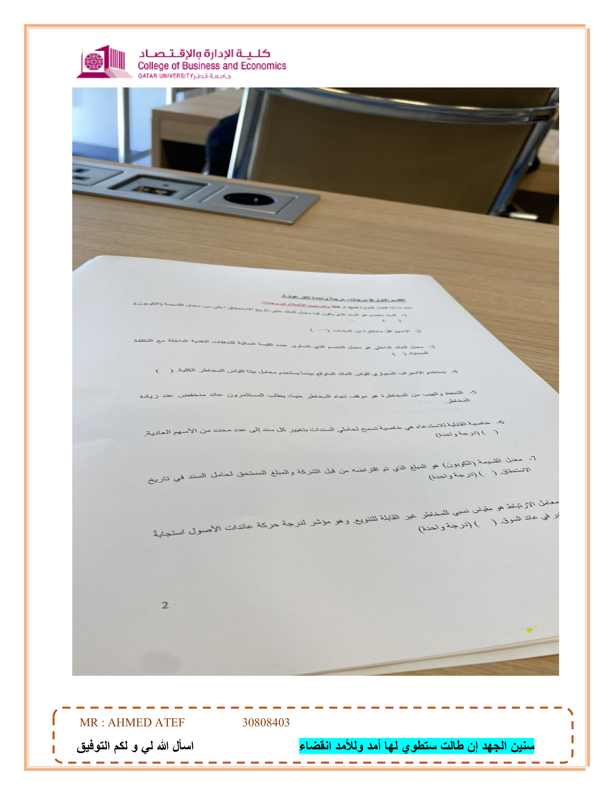

السؤال الأول: اذكر أربع اختلافات بين الأسهم والسندات؟
| وجه المقارنة |
السندات (الديون) |
الأسهم (الملكية) |
| طبيعة الأداة |
تعتبر دينًا على الشركة، وحاملها دائن. |
تمثل حصة ملكية في الشركة، وحاملها مالك. |
| حق التصويت |
لا يملك حملة السندات حق التصويت في الإدارة. |
يملك حملة الأسهم العادية حق التصويت. |
| تاريخ الاستحقاق |
لها تاريخ استحقاق محدد يجب فيه سداد أصل الدين. |
ليس لها تاريخ استحقاق (دائمة). |
| الأولوية في السداد |
لهم الأولوية في المطالبة بالدخل والأصول عند الإفلاس. |
يأتون في المرتبة الأخيرة (حق متبقي) بعد الدائنين. |
| العائد والضريبة |
الفائدة تعتبر نفقة وتخصم من الضرائب. |
توزيعات الأرباح لا تخفض الدخل الخاضع للضريبة. |
Chapter 7 & 6
السؤال الثاني: حساب صافي القيمة الحالية (NPV) وفترة الاسترداد
أ- حساب صافي القيمة الحالية (NPV) عند معدل خصم 9%:
$$NPV_A = \frac{40,000}{(1.09)^1} + \frac{40,000}{(1.09)^2} + \frac{40,000}{(1.09)^3} - 80,000$$
$$NPV_A = 21,251 \text{ دولار تقريبًا}$$
$$NPV_B = \frac{35,000}{(1.09)^1} + \frac{35,000}{(1.09)^2} + \frac{90,000}{(1.09)^3} - 120,000$$
$$NPV_B = 11,066 \text{ دولار تقريبًا}$$
القرار: يجب اختيار المشروع (أ) لأنه يحقق NPV أعلى.
ب- حساب فترة الاسترداد (الحد الأقصى سنتين):
- المشروع (أ): يتم استرداد التكلفة (80,000) بالكامل في السنة الثانية (40,000 + 40,000).
فترة الاسترداد = 2 سنة.
- المشروع (ب): السنة 1 (35,000) + السنة 2 (35,000) = 70,000. المتبقي 50,000 يتم تغطيته من تدفق السنة الثالثة (90,000).
فترة الاسترداد = 2.56 سنة تقريبًا.
القرار: اختيار المشروع (أ) لأن فترة استرداده (2 سنة) تقع ضمن الحد الأقصى المقبول.
Chapter 8

السند بخصم هو السند الذي يكون فيه معدل العائد حتى تاريخ الاستحقاق أعلى من معدل القسيمة (الكوبون).
( صح )
التوضيح: عندما يرتفع سعر الفائدة في السوق عن معدل الكوبون، ينخفض سعر السند ويباع بخصم.
Chapter 6
الأسهم أقل مخاطر من السندات.
( خطأ )
التصحيح: الأسهم أعلى مخاطر من السندات، لأن حملة الأسهم يأتون في المرتبة الأخيرة عند الإفلاس وعوائدهم غير مضمونة.
Chapter 7
معدل العائد الداخلي هو معدل الخصم الذي تتساوى عنده القيمة الحالية للتدفقات النقدية الداخلة مع التكلفة المبدئية.
( صح )
التوضيح: هو المعدل الذي يجعل NPV يساوي صفرًا.
Chapter 8
يستخدم الانحراف المعياري لقياس العائد المتوقع بينما يستخدم معامل بيتا لقياس المخاطر الكلية.
( خطأ )
التصحيح: يستخدم الانحراف المعياري لقياس المخاطر الكلية، بينما يستخدم معامل بيتا لقياس المخاطر النظامية (غير القابلة للتنويع).
Chapter 5
التحفظ والتهيب من المخاطر هو موقف تجاه المخاطر حيث يطلب المستثمرون عائد منخفض عند زيادة المخاطر.
( خطأ )
التصحيح: المستثمر المتحفظ يطلب عائدًا مرتفعًا كتعويض عند زيادة المخاطر.
Chapter 5
خاصية القابلية للاستدعاء هي خاصية تسمح لحاملي السندات بتغيير كل سند إلى عدد محدد من الأسهم العادية.
( خطأ )
التصحيح: هذه تسمى القابلية للتحويل (Convertible). أما القابلية للاستدعاء فهي حق للشركة لإعادة شراء السندات قبل الاستحقاق.
Chapter 6
معدل القسيمة (الكوبون) هو المبلغ الذي تم اقتراضه من قبل الشركة والمبلغ المستحق لحامل السند في تاريخ الاستحقاق.
( خطأ )
التصحيح: المبلغ المستحق في تاريخ الاستحقاق هو القيمة الاسمية (Par Value). أما معدل الكوبون فهو نسبة الفائدة الدورية.
Chapter 6
معامل الارتباط هو مقياس نسبي للمخاطر غير القابلة للتنويع. وهو مؤشر لدرجة حركة عائدات الأصول استجابة في مخاطر السوق.
( خطأ )
التصحيح: هذا تعريف معامل بيتا (Beta). معامل الارتباط يقيس العلاقة بين حركة أصلين لغرض التنويع.
Chapter 5

1) حساب السعر الحالي للسهم (النمو المستمر)
المعطيات: \(D_0 = 15\$\)، \(g = 8\%\)، \(r = 10\%\)
$$D_1 = 15 \times (1 + 0.08) = 16.2 \$$$
$$P_0 = \frac{16.2}{0.10 - 0.08} = \frac{16.2}{0.02} = 810 \$$$
Chapter 7
2) حساب سعر السهم بعد 5 سنوات
المعطيات: \(D_0 = 20\$\)، \(g = 5\%\)، \(r = 7\%\)
$$D_1 = 20 \times 1.05 = 21$$
$$P_0 = \frac{21}{0.07 - 0.05} = 1,050 \$$$
$$P_5 = 1,050 \times (1.05)^5 \approx 1,340.1 \$$$
Chapter 7
3) القيمة الحالية للتدفقات النقدية المختلطة
المعطيات (معدل 6%): 10,000 (س1-4)، -6,000 (س5)، 8,000 (س6-10).
- PV (س1-4): \( 10,000 \times 3.4651 = 34,651\$ \)
- PV (س5): \( -6,000 \times 0.7473 = -4,483.8\$ \)
- PV (س6-10): نحسب قيمتها عند السنة 5 أولاً (33,699.2) ثم نخصمها للصفر \( \approx 25,183.4\$ \)
الإجمالي: \( 34,651 - 4,483.8 + 25,183.4 = 55,350.6\$ \)
Chapter 4

4) حساب العائد المتوقع على المحفظة المالية
قيمة المحفظة: 20,000$ (س: 8000، ص: 6000، ع: 6000)
الأوزان: س (40%)، ص (30%)، ع (30%)
$$E(r_p) = (0.40 \times 10\%) + (0.30 \times 8\%) + (0.30 \times 16\%)$$
$$E(r_p) = 4\% + 2.4\% + 4.8\% = 11.2\%$$
Chapter 5
5) حساب سعر السند (بعد مرور 3 سنوات)
المتبقي \(n=7\) سنوات، YTM = 8%، الكوبون = 9% (90$).
$$PV_{coupons} = 90 \times 5.2064 = 468.58 \$$$
$$PV_{par} = 1,000 \times 0.5835 = 583.50 \$$$
$$Price = 468.58 + 583.50 = 1,052.08 \$$$
Chapter 6

7) حساب معدل العائد الخالي من المخاطر
الاسمي = 14.2%، علاوة المخاطرة = 4.1%
$$R_F = 14.2\% - 4.1\% = 10.1\%$$
Chapter 6
8) حساب العائد على الأصل (ع) باستخدام CAPM
بيتا = 0.5، \(R_F = 6\%\)، \(R_m = 21\%\)
$$r = 6\% + 0.5 \times (21\% - 6\%) = 13.5\%$$
Chapter 5
9) فترة الاسترداد للمشروعين س و ص
التكلفة 6,500$. الحد الأقصى 4 سنوات.
- المشروع س: يسترد المبلغ في 2.41 سنة.
- المشروع ص: يسترد المبلغ في 3.07 سنة.
القرار: نختار المشروع (س) لأنه الأسرع استرداداً.
Chapter 8

6) اذكر 4 اختلافات بين السندات والأسهم العادية؟
- طبيعة الأداة: السندات دين (قرض)، الأسهم ملكية.
- الأولوية: السندات لها أولوية السداد عند الإفلاس، الأسهم تأتي أخيرًا.
- العائد: السندات لها فائدة ثابتة، الأسهم لها توزيعات متغيرة.
- تاريخ الاستحقاق: السندات لها تاريخ محدد، الأسهم أبدية.
Chapter 7 & 6
7) اشرح مزايا وعيوب طريقة فترة الاسترداد؟
المزايا: سهلة الحساب والفهم، تعطي مؤشرًا للسيولة، تقلل المخاطر.
العيوب: تتجاهل القيمة الزمنية للنقود، تتجاهل التدفقات بعد فترة الاسترداد، تعتمد على معيار شخصي.
Chapter 8
8) اشرح المقصود بالمخاطر الغير قابلة للتنويع؟
هي المخاطر الناتجة عن عوامل السوق العامة (تضخم، حروب، كساد) وتؤثر على جميع الشركات. تسمى "المخاطر النظامية" ولا يمكن التخلص منها بالتنويع. تقاس بمعامل بيتا (\(\beta\)).
Chapter 5

السند بخصم هو السند الذي يكون فيه معدل العائد حتى تاريخ الاستحقاق أعلى من معدل القسيمة.
( صح )
Chapter 6
الأسهم أقل مخاطرة من السندات.
( خطأ ) - الأسهم أعلى مخاطرة.
Chapter 7
معدل العائد الداخلي هو معدل الخصم الذي تتساوى عنده القيمة الحالية للتدفقات مع التكلفة المبدئية.
( صح )
Chapter 8
يستخدم الانحراف المعياري لقياس العائد المتوقع بينما يستخدم معامل بيتا لقياس المخاطر الكلية.
( خطأ ) - الانحراف المعياري للمخاطر الكلية، وبيتا للمخاطر النظامية.
Chapter 5
التحفظ من المخاطرة يعني طلب عائد منخفض عند زيادة المخاطر.
( خطأ ) - يطلبون عائدًا مرتفعًا.
Chapter 5

(محتوى هذه الصفحة تكرار لأسئلة الصفحة 6: الفروقات بين الأسهم والسندات، فترة الاسترداد، والمخاطر غير القابلة للتنويع).
Chapters 5, 6, 7, 8

1- حساب السعر الحالي للسهم (نموذج جوردون)
المعطيات: \(D_0 = 15\)، \(g = 8\%\)، \(r = 10\%\)
$$D_1 = 15 \times 1.08 = 16.2$$
$$P_0 = \frac{16.2}{0.10 - 0.08} = \frac{16.2}{0.02} = 810 \$$$
Chapter 7
2- حساب سعر السهم بعد 5 سنوات
المعطيات: \(D_0 = 20\)، \(g = 5\%\)، \(r = 7\%\)
$$P_0 = \frac{20 \times 1.05}{0.02} = 1,050$$
$$P_5 = 1,050 \times (1.05)^5 \approx 1,340.1 \$$$
Chapter 7

3- ما هي القيمة الحالية للتدفقات النقدية التالية (معدل الخصم 6%)
سنوات 1-4 (10,000)، سنة 5 (-6,000)، سنوات 6-10 (8,000).
$$PV_{Total} = 34,651 + (-4,483.6) + 25,182.5 \approx 55,350 \$$$
(تم تفصيل الخطوات في حل الصفحة 3 المطابق لهذا السؤال).
Chapter 4 - Part 2

4) حساب العائد المتوقع على المحفظة المالية
الأوزان: س (0.50)، ع (0.25). الوزن المتبقي لـ ص = \(1 - 0.75 = 0.25\).
$$E(r_p) = (10\% \times 0.50) + (8\% \times 0.25) + (16\% \times 0.25)$$
$$= 5\% + 2\% + 4\% = 11\%$$
Chapter 5
5) حساب سعر السند (ص) - نصف سنوي
القيمة الاسمية 1000، 5 سنوات، YTM 12%، كوبون 10% (نصف سنوي).
تعديل: \(n = 10\) فترات، \(r = 6\%\)، \(PMT = 50\).
$$Price = 50 \times \text{PVIFA}(6\%, 10) + 1000 \times \text{PVIF}(6\%, 10)$$
$$Price = 368 + 558.4 = 926.4 \$$$
Chapter 6

7) حساب معدل العائد الخالي من المخاطر
الاسمي = 14.2%، علاوة المخاطرة = 4.1%
$$R_F = 14.2\% - 4.1\% = 10.1\%$$
Chapter 6
8) حساب العائد على الأصل (ع) باستخدام CAPM
\(\beta = 0.5\)، \(R_F = 6\%\)، \(R_m = 21\%\)
$$r = 6\% + 0.5 \times (21\% - 6\%) = 13.5\%$$
Chapter 5

9) اختيار المشروع باستخدام طريقة فترة الاسترداد
التكلفة 6,500$. الحد الأقصى 4 سنوات.
- المشروع (س): يسترد في 2.41 سنة.
- المشروع (ص): يسترد في 3.07 سنة.
القرار: اختيار المشروع (س) لأنه الأسرع.
Chapter 8

1- حساب القيمة الحالية للتدفقات النقدية المختلطة
600 (س1-4)، -500 (س5)، 900 (س6-10). معدل الخصم 10%.
$$PV_1 = 1,901.9$$
$$PV_2 = -310.5$$
$$PV_3 = 2,118.3$$
$$Total = 3,709.7 \$$$
Chapter 4
2- تقييم السندات (الفائدة الاسمية وسعر السوق)
أ) سعر الفائدة الاسمي:
$$r = 4.13\% + 2.67\% + 2.66\% = 9.46\%$$
ب) سعر السوق للسندات:
المتبقي 18 سنة (36 فترة نصف سنوية). الفائدة الدورية \(9.46\% / 2 = 4.73\%\).
$$Price = 64.25 \times \text{PVIFA}(4.73\%, 36) + 1000 \times \text{PVIF}(4.73\%, 36)$$
$$Price \approx 1,100.9 + 189.5 = 1,290.4 \$$$
Chapter 6
6) اذكر 4 اختلافات بين السندات والأسهم العادية؟
- طبيعة الأداة: السندات دين (قرض)، الأسهم ملكية.
- الأولوية: السندات لها أولوية السداد عند الإفلاس، الأسهم تأتي أخيرًا.
- العائد: السندات لها فائدة ثابتة، الأسهم لها توزيعات متغيرة.
- تاريخ الاستحقاق: السندات لها تاريخ محدد، الأسهم أبدية.
Chapter 7 & 6
7) اشرح مزايا وعيوب طريقة فترة الاسترداد؟
المزايا: سهلة الحساب والفهم، تعطي مؤشرًا للسيولة، تقلل المخاطر.
العيوب: تتجاهل القيمة الزمنية للنقود، تتجاهل التدفقات بعد فترة الاسترداد، تعتمد على معيار شخصي.
Chapter 8
8) اشرح المقصود بالمخاطر الغير قابلة للتنويع؟
هي المخاطر الناتجة عن عوامل السوق العامة (تضخم، حروب، كساد) وتؤثر على جميع الشركات. تسمى "المخاطر النظامية" ولا يمكن التخلص منها بالتنويع. تقاس بمعامل بيتا (\(\beta\)).
Chapter 5
السند بخصم هو السند الذي يكون فيه معدل العائد حتى تاريخ الاستحقاق أعلى من معدل القسيمة.
( صح )
Chapter 6
الأسهم أقل مخاطرة من السندات.
( خطأ ) - الأسهم أعلى مخاطرة.
Chapter 7
معدل العائد الداخلي هو معدل الخصم الذي تتساوى عنده القيمة الحالية للتدفقات مع التكلفة المبدئية.
( صح )
Chapter 8
يستخدم الانحراف المعياري لقياس العائد المتوقع بينما يستخدم معامل بيتا لقياس المخاطر الكلية.
( خطأ ) - الانحراف المعياري للمخاطر الكلية، وبيتا للمخاطر النظامية.
Chapter 5
التحفظ من المخاطرة يعني طلب عائد منخفض عند زيادة المخاطر.
( خطأ ) - يطلبون عائدًا مرتفعًا.
Chapter 5
(محتوى هذه الصفحة تكرار لأسئلة الصفحة 6: الفروقات بين الأسهم والسندات، فترة الاسترداد، والمخاطر غير القابلة للتنويع).
Chapters 5, 6, 7, 8
1- حساب السعر الحالي للسهم (نموذج جوردون)
المعطيات: \(D_0 = 15\)، \(g = 8\%\)، \(r = 10\%\)
$$D_1 = 15 \times 1.08 = 16.2$$
$$P_0 = \frac{16.2}{0.10 - 0.08} = \frac{16.2}{0.02} = 810 \$$$
Chapter 7
2- حساب سعر السهم بعد 5 سنوات
المعطيات: \(D_0 = 20\)، \(g = 5\%\)، \(r = 7\%\)
$$P_0 = \frac{20 \times 1.05}{0.02} = 1,050$$
$$P_5 = 1,050 \times (1.05)^5 \approx 1,340.1 \$$$
Chapter 7
3- ما هي القيمة الحالية للتدفقات النقدية التالية (معدل الخصم 6%)
سنوات 1-4 (10,000)، سنة 5 (-6,000)، سنوات 6-10 (8,000).
$$PV_{Total} = 34,651 + (-4,483.6) + 25,182.5 \approx 55,350 \$$$
(تم تفصيل الخطوات في حل الصفحة 3 المطابق لهذا السؤال).
Chapter 4 - Part 2
4) حساب العائد المتوقع على المحفظة المالية
الأوزان: س (0.50)، ع (0.25). الوزن المتبقي لـ ص = \(1 - 0.75 = 0.25\).
$$E(r_p) = (10\% \times 0.50) + (8\% \times 0.25) + (16\% \times 0.25)$$
$$= 5\% + 2\% + 4\% = 11\%$$
Chapter 5
5) حساب سعر السند (ص) - نصف سنوي
القيمة الاسمية 1000، 5 سنوات، YTM 12%، كوبون 10% (نصف سنوي).
تعديل: \(n = 10\) فترات، \(r = 6\%\)، \(PMT = 50\).
$$Price = 50 \times \text{PVIFA}(6\%, 10) + 1000 \times \text{PVIF}(6\%, 10)$$
$$Price = 368 + 558.4 = 926.4 \$$$
Chapter 6
7) حساب معدل العائد الخالي من المخاطر
الاسمي = 14.2%، علاوة المخاطرة = 4.1%
$$R_F = 14.2\% - 4.1\% = 10.1\%$$
Chapter 6
8) حساب العائد على الأصل (ع) باستخدام CAPM
\(\beta = 0.5\)، \(R_F = 6\%\)، \(R_m = 21\%\)
$$r = 6\% + 0.5 \times (21\% - 6\%) = 13.5\%$$
Chapter 5
9) اختيار المشروع باستخدام طريقة فترة الاسترداد
التكلفة 6,500$. الحد الأقصى 4 سنوات.
- المشروع (س): يسترد في 2.41 سنة.
- المشروع (ص): يسترد في 3.07 سنة.
القرار: اختيار المشروع (س) لأنه الأسرع.
Chapter 8
1- حساب القيمة الحالية للتدفقات النقدية المختلطة
600 (س1-4)، -500 (س5)، 900 (س6-10). معدل الخصم 10%.
$$PV_1 = 1,901.9$$
$$PV_2 = -310.5$$
$$PV_3 = 2,118.3$$
$$Total = 3,709.7 \$$$
Chapter 4
2- تقييم السندات (الفائدة الاسمية وسعر السوق)
أ) سعر الفائدة الاسمي:
$$r = 4.13\% + 2.67\% + 2.66\% = 9.46\%$$
ب) سعر السوق للسندات:
المتبقي 18 سنة (36 فترة نصف سنوية). الفائدة الدورية \(9.46\% / 2 = 4.73\%\).
$$Price = 64.25 \times \text{PVIFA}(4.73\%, 36) + 1000 \times \text{PVIF}(4.73\%, 36)$$
$$Price \approx 1,100.9 + 189.5 = 1,290.4 \$$$
Chapter 6

4 - في حالة تقنين أو ترشيد رأس المال (Capital Rationing):
الإجابة: (ب) يكون لدى الشركة مبالغ مالية محدودة، والعديد من المشاريع تتنافس للحصول على تلك الموارد.
Chapter 8
5 - هو مقياس نسبي للمخاطر غير القابلة للتنويع:
الإجابة: (ج) معامل بيتا
Chapter 5
6 - هو موقف تجاه المخاطر حيث يختار المستثمرين الاستثمار ذي المخاطر المرتفعة بغض النظر عن مستوى العائد:
الإجابة: (أ) تقبل المخاطر (Risk seeking)
Chapter 5
7 - عند وضع استثمارات مختلفة لتكوين محفظة، فإن المخاطر ... يمكن تقليلها...:
الإجابة: (ج) الكلية، الغير نظامية، النظامية
التنويع يقلل المخاطر الكلية عن طريق التخلص من المخاطر غير النظامية، بينما تبقى المخاطر النظامية.
Chapter 5

هناك علاقة عكسية بين القيمة الحالية وسعر الفائدة.
( صح )
Chapter 4
تقليل المخاطر من خلال زيادة عدد الأصول المستثمرة يسمى التنويع.
( صح )
Chapter 5
السندات تحقق ميزة ضريبية بينما الأسهم العادية لا تحقق ميزة ضريبية.
( صح ) - لأن الفائدة تخصم من الضرائب.
Chapter 7
حتى تقبل الشركة المشروع يجب أن يكون معدل العائد الداخلي أقل من تكلفة رأس المال.
( خطأ ) - يجب أن يكون أكبر من تكلفة رأس المال.
Chapter 8
تشبه الأسهم الممتازة الأسهم العادية من حيث أن توزيعات أرباحها ثابتة.
( خطأ ) - تشبه السندات في ثبات الأرباح، وتختلف عن الأسهم العادية التي تكون توزيعاتها متغيرة.
Chapter 7

1- حساب معامل بيتا للمحفظة الاستثمارية
قيمة المحفظة 10,000. الأوزان: ص (0.3)، ع (0.4)، س (0.3).
$$ \beta_p = (0.30 \times 2) + (0.40 \times 1.5) + (0.30 \times 1.25) $$
$$ \beta_p = 0.60 + 0.60 + 0.375 = 1.575 $$
Chapter 5
2- حساب القيمة الحالية للتدفقات النقدية المختلطة (معدل 8%)
500 (س1-4)، -400 (س5)، 800 (س6-11).
$$ PV_1 = 1,656.05 $$
$$ PV_2 = -272.23 $$
$$ PV_3 = 2,517.01 $$
$$ Total PV = 3,900.83 \$$$
Chapter 4

5- حساب السعر الحالي للسند
القيمة الاسمية 1000، كوبون 8% (80$)، 10 سنوات، YTM 6%.
$$Price = 80 \times 7.3601 + 1000 \times 0.5584$$
$$Price = 588.81 + 558.39 = 1,147.2 \$$$
Chapter 6
7- المفاضلة بين المشروعين س و ص (صافي القيمة الحالية NPV)
المشروع س: \( NPV = -18,275.73\$ \) (مرفوض).
المشروع ص: \( NPV = 27,734.78\$ \) (مقبول).
القرار: نختار المشروع (ص) لأن الـ NPV موجب.
Chapter 8

3- حساب العائد المتوقع على المحفظة المالية
س (4000، 10%)، ص (6000، 20%).
$$E(r_p) = (0.40 \times 10\%) + (0.60 \times 20\%) = 4\% + 12\% = 16\%$$
Chapter 5
8- حساب فترة الاسترداد للمشروع (ص)
التكلفة 8000. التدفقات: 1000، 1600، 3800، 4800.
يتم تغطية التكلفة بالكامل خلال السنة الرابعة.
فترة الاسترداد = 3.33 سنة.
Chapter 8
4- حساب معامل بيتا لسهم الشركة (ع)
\(R_F = 3\%\)، علاوة السوق = 8%، العائد المتوقع = 12%.
$$12 = 3 + \beta \times 8 \Rightarrow 9 = 8\beta \Rightarrow \beta = 1.125$$
Chapter 5

ب) حساب معدل العائد المتوقع على سهم الشركة (ص)
بيتا = 1، \(R_F = 5\%\)، علاوة السوق = 10%.
$$ E(r) = 5\% + 1 \times (10\%) = 15\% $$
(بما أن بيتا = 1، فإن العائد يساوي عائد السوق).
Chapter 5
أسئلة مقالية
1- أنواع المخاطر الدولية: مخاطر العملة (سعر الصرف) والمخاطر السياسية.
2- الاستثمارات المتمانعة (Mutually Exclusive): هي المشاريع التي يتنافس قبول أحدها مع الآخر، مثل الاختيار بين آلتين لنفس الغرض.
Chapter 5 & 8